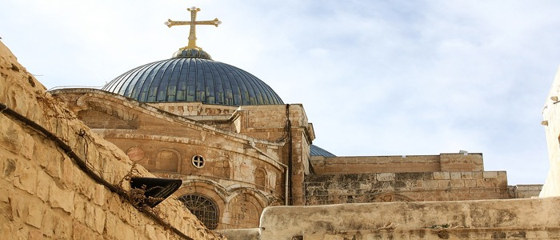
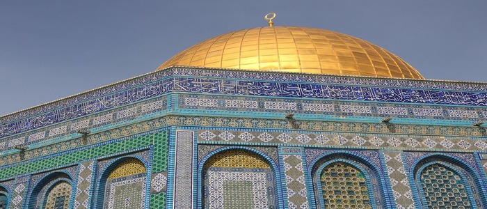
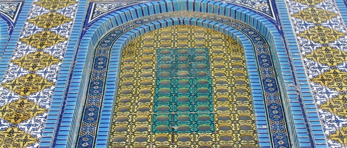

Das christliche Viertel liegt in der nordwestlichen Ecke der Altstadt. Zusätzlich grenzt das Viertel ans jüdische und ans armenische sowie an das muslimische Viertel. Das christliche Viertel enthält etwa 40 dem Christentum heilige Orte.

Heute wird das Jüdische Viertel nur noch von 2.000 jüdischen Einwohnern bewohnt und ist die Heimat von zahlreichen Talmudschulen und Synagogen, vor allem der Hurva-Synagoge, die unzählige Male zerstört und 2010 wiedereröffnet wurde.

Das Quartier entwickelte sich im Laufe der Jahrhunderte um die Jakobskathedrale, die bis heute das Viertel beherrscht. Die Kathedrale ist der Hauptsitz des Armenischen Patriarchats von Jerusalem.